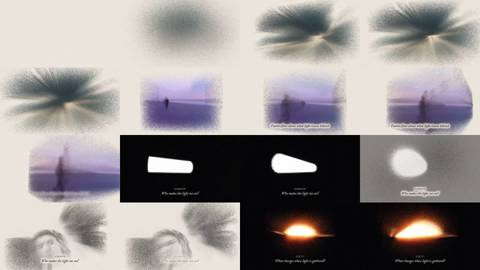
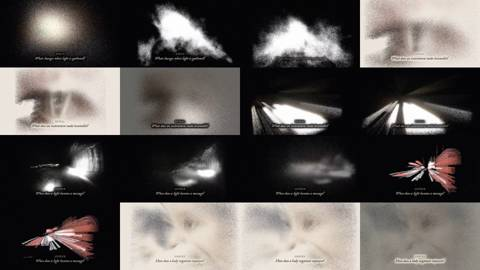
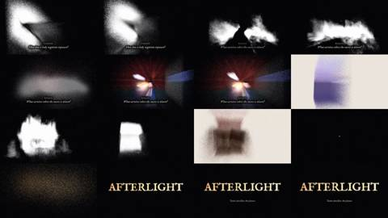
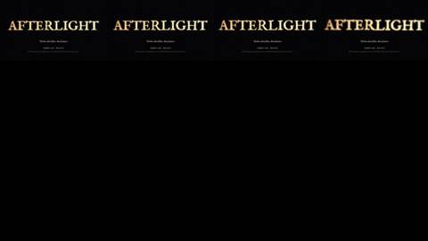
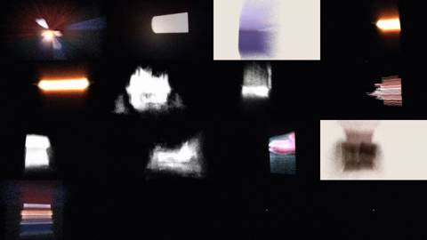
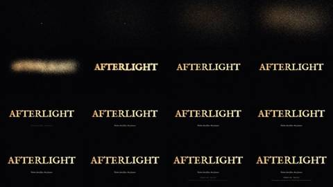
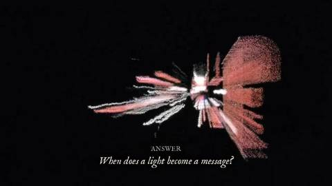
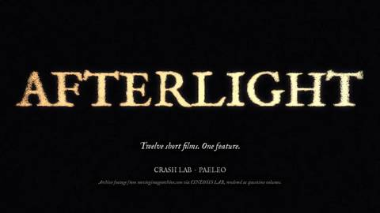

Critic · 2026-10-28 22:57 UTC · looked at 10 images
Critic watches Afterlight trailer
REPAIR 4
The prompt it was given
You are an independent critic. Watch a 78-second trailer at /home/claude/afterlight/trailer/afterlight-trailer-share.mp4 before reading any other file in that folder; don't read code or notes.
How to watch: pull frames with ffmpeg (ffmpeg -ss T -i FILE -frames:v 1 -vf scale=960:-1 out.jpg) and view them with the Read tool. Sample every 1.5 s across the whole trailer, and every 0.25 s around cuts and the title. To check sound against picture, look at the audio loudness envelope (ffmpeg -i FILE -af ebur128 -f null - or astats). Put working files in /tmp/claude-0/c5/.
Context: the director asked for "a real unique trailer" for a program of short films about light, heat and what light leaves behind. His reference was an Instagram clip of Gaussian-splat or point-cloud "spacetime" footage: a walk through foggy woods where the scene is made of dust and smears, with edges that dissolve into white. Earlier work was criticised as "stilted PowerPoint".
Report, in under 500 words:
- What you think the trailer is selling, and what its visual idea is, read only from the images.
-
PASS, REPAIR or INCONCLUSIVE on each of the following:
- (a) it feels unique rather than a generic template;
- (b) it builds like a trailer, with rhythm, escalation and a payoff;
- (c) the text cards are legible on a phone;
- (d) the images are legible enough. Name the shots that read as unrecognisable mush.
- The 3–5 most important repairs, each with timestamps.
- The strongest moments.
















What it reported
AFTERLIGHT trailer review. I watched only the video. I sampled frames every 1.5 s, every 0.25–0.5 s around the hits, the montage and the title, and checked the EBU R128 loudness envelope. My working files are in /tmp/claude-0/c5/.
1. What it is selling and its visual idea It sells an anthology of twelve short films ("Twelve short films. One feature.", CRASH LAB · PAELEO). It is built from archive footage that has been turned into grain clouds on paper-white or black grounds. The visual idea is that each image is only what light has left behind: figures and sources break into dust and smear. There are six named sections, each with its own question card: BORROW, FOCUS, REVEAL, ANSWER, EMBODY and REMAIN.
2. Verdicts
- (a) Unique: REPAIR. The grain material is distinctive and nothing like a stock template. The structure is a template, though. The same lower-third card appears six times, and the background flips between paper, grey and black at each section, which reads as slide changes. The reference clip moves forward through a volume. This trailer mostly shows static, centred blobs.
- (b) Builds like a trailer: REPAIR. An audio hit lands every ~7.5 s (12.5, 20.5, 27.5, 35.5, 43, 50.5) and each starts a section of the same length. That is metronomic, not escalating. The real build only arrives at 58–64: fast cuts, loudness rising to −11 LUFS. Then there is a good dip at 64.5–65 (−28.6) and the title hit at 65.5. After that the title holds for about 12 s (66–78), which is too long.
- (c) Text legible on phone: REPAIR (partial). The question lines (~4% of frame height) are fine full-screen but marginal in a portrait feed. The section labels (~2%) and the credit line at 72 s+ ("Archive footage from movingimagearchive.com…", ~1.5%) are unreadable on a phone. The cards also fade in late and fade out early: the BORROW question is half-transparent at 12.5 s, and the FOCUS question dissolves into the white cloud at 26–27 s. Check the spelling "PAELEO" against the lab's real name (pAELo?).
-
(d) Images legible: REPAIR. Readable: the beach figure (6–12), the lamp shape (12.5–15), the sun on the horizon (19.5–22), the tunnel or headlights (33–35), the red burst (39–42), the faces (43–47) and the red/blue projector beam (55–57). These read as mush:
- 14 (grey blob);
- 22.5–24 (glowing ellipse);
- 25.5–27 (white cloud on black);
- 28.5–31.5 (brown and grey smears);
- 37.5–39 (smeared streaks, nearly empty at 39);
- 49.5–52.5 (white blobs, grey ellipse);
- most of the montage blocks at 59–63.
3. Repairs, most important first
- Break the even pulse (12.5–58). Vary the section lengths: drop the two weakest sections (FOCUS and REVEAL are the muddiest) or shorten them to about 3 s. Let the cuts tighten toward 58 so the montage is the end of a build, not a sudden change.
- Add forward motion through the volume. At least two shots should move the camera through the grain the way the reference walk does, for example pushing into the beach figure (6–12) and into the tunnel (33–35). Stop holding static centred blobs.
- Cut or replace the mush. The shots are 14, 22.5–27, 28.5–31.5, 37.5–39 and 49.5–52.5. Each section should open on its most recognisable frame before it dissolves.
- Fix the cards. Raise label size to about 3.5% and question size to about 5.5%. Show each card fully for at least 1.5 s at its hit. Keep one background treatment rather than flipping the ground at every section.
- Shorten the end. Cut the title and credits from ~12 s to ~6 s (end around 72). Move the archive credit to a separate, larger card or out of the video entirely.
4. Strongest moments
- 0–6: the radial grain burst on paper, an opening that is clearly its own.
- 6–12: the beach figure smearing as it walks.
- 19.5–22: the sun on the horizon in black.
- 39–42: the red burst behind "When does a light become a message?"
- 55–57: the red/blue projector beam.
- 64.5–69: the drop to silence, then a single gold dot that blooms into the dust-built AFTERLIGHT title. This is the best payoff in the trailer and its sound and picture are in sync.